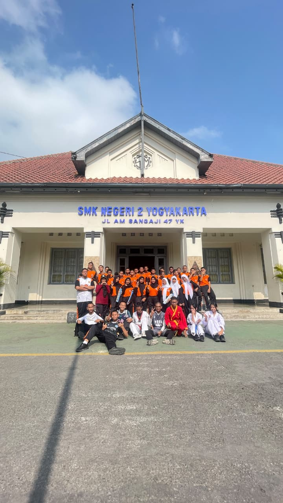
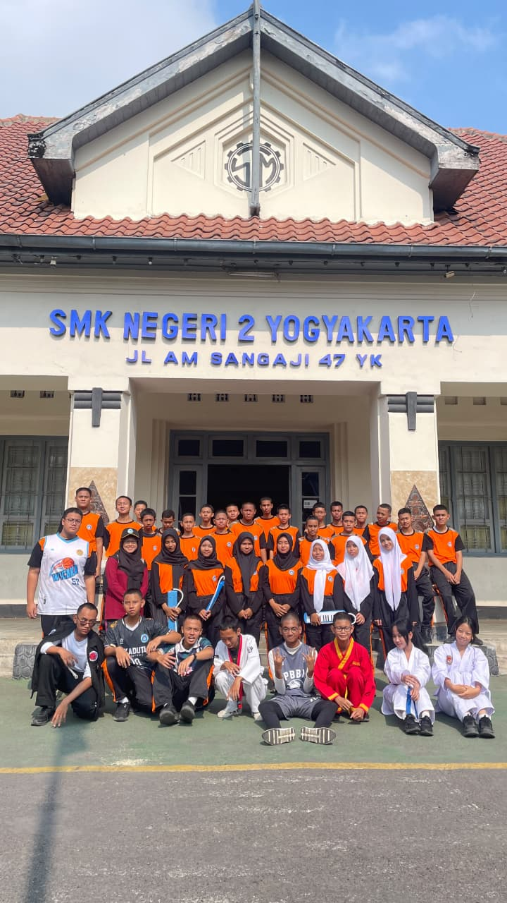
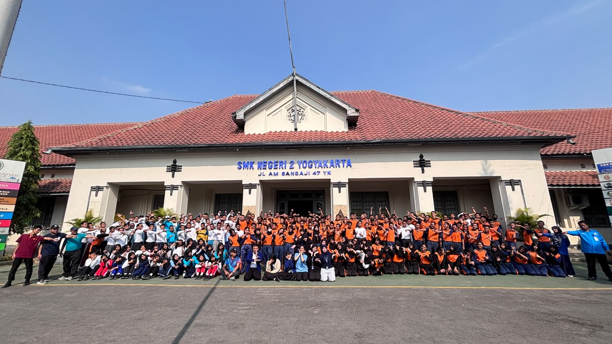
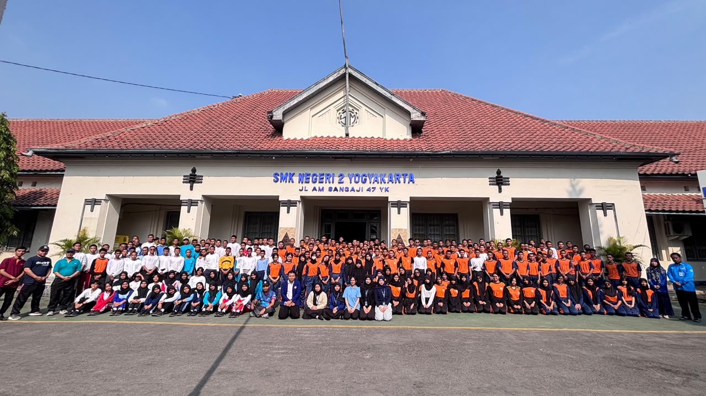
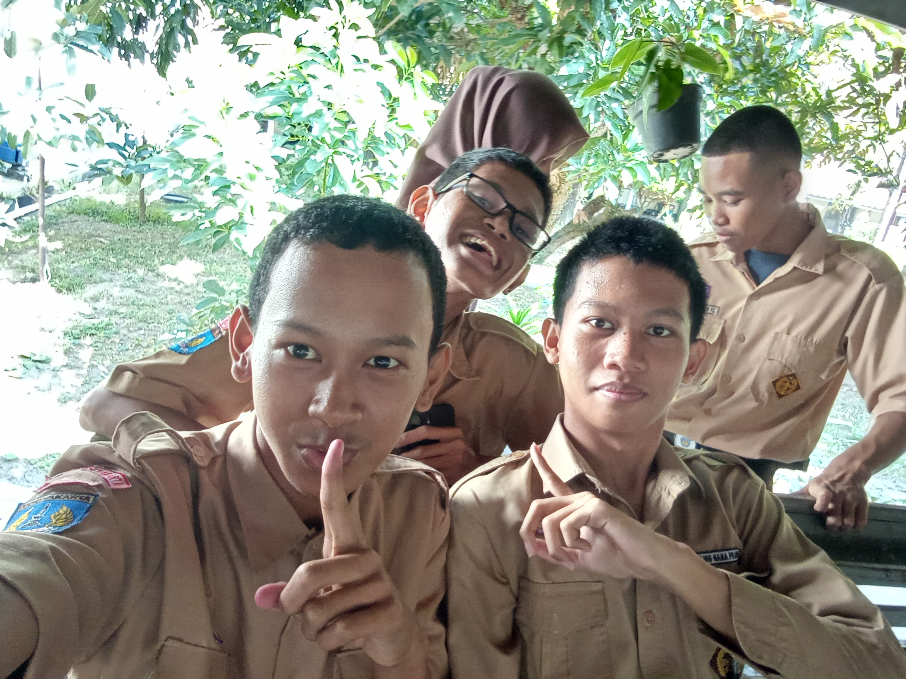
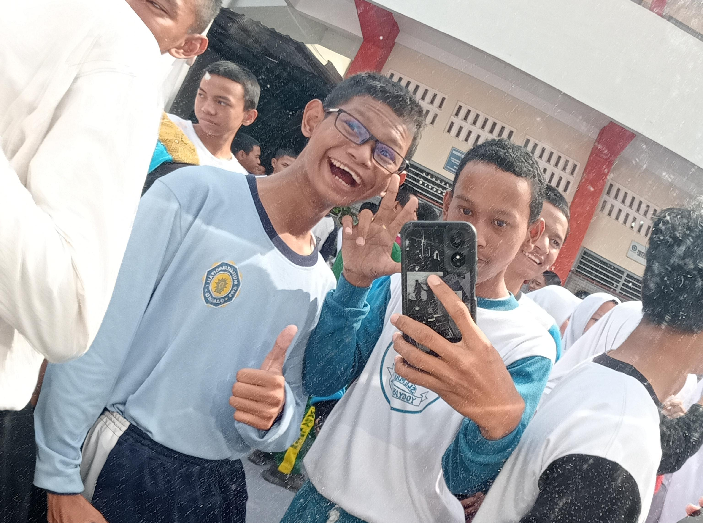
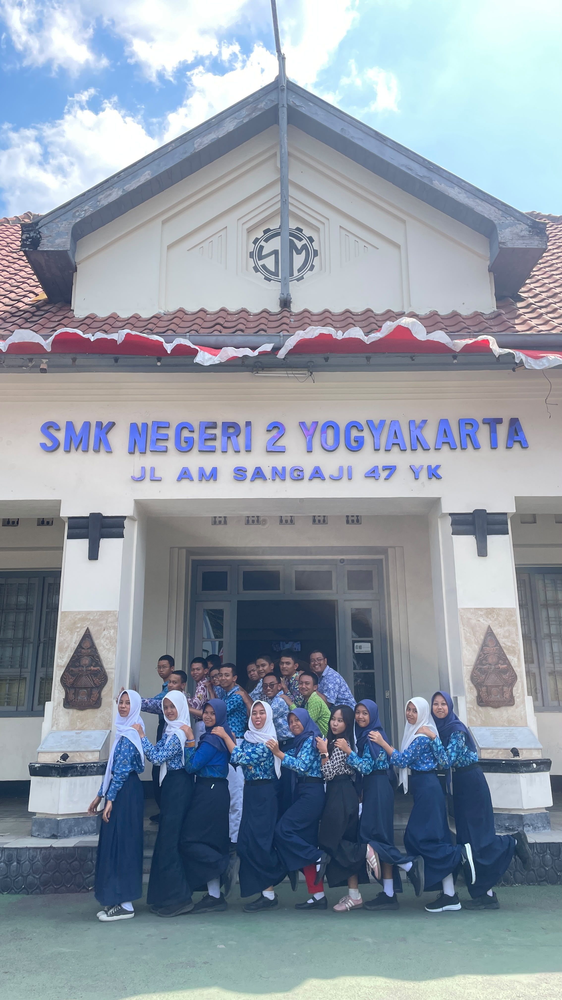
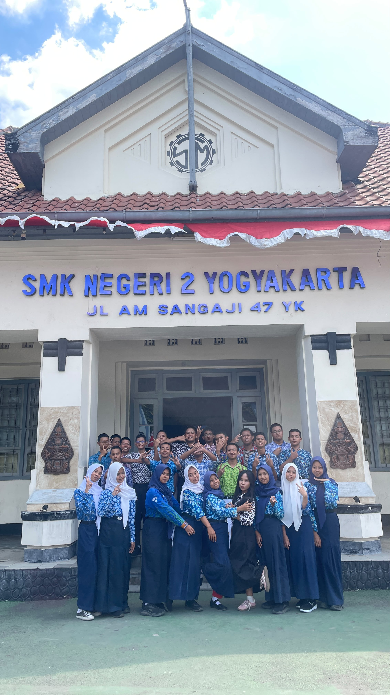
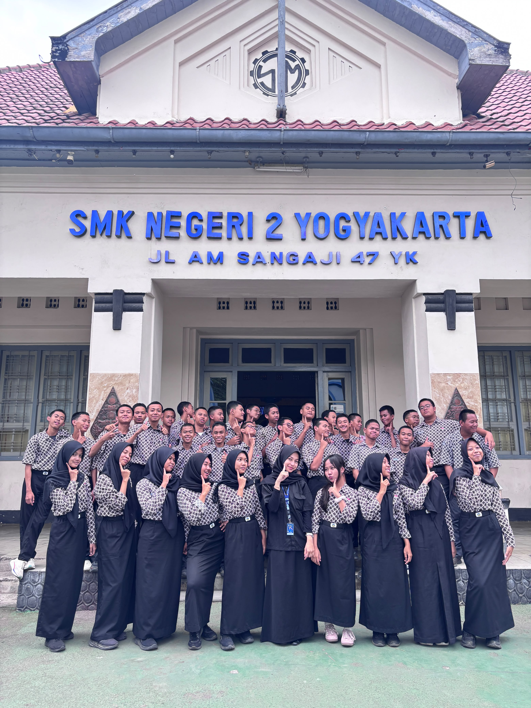
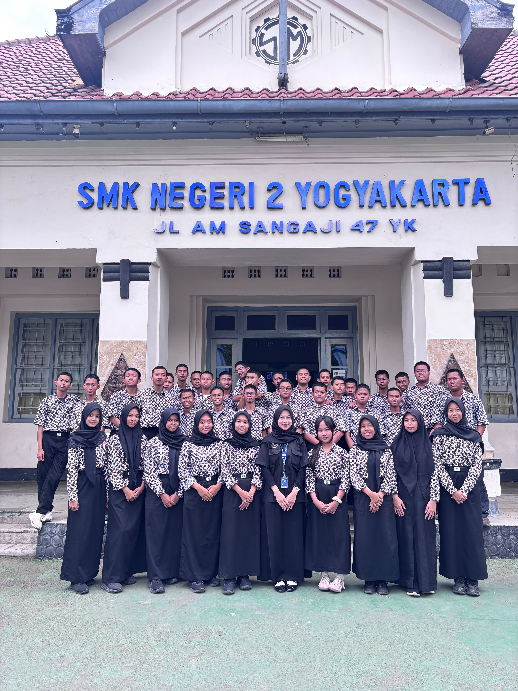

|
ALBUM FOTO TEMAN
Kumpulan Foto Bersama Teman-Teman |

|
|
|
| |
|
| |
|
| |
|
| |
|
Galeri Foto Teman
Berikut adalah kumpulan foto bersama teman-teman saya.
(Klik pada foto untuk melihat detail ukuran asli)
|
Foto Teman 1  Depan lobby HUT Jogja |
Foto Teman 2  Sijaren oren oren |
|
Foto Jurusan  Jurusan SIJA |
Foto Jurusan #2  Bismillah orang sukses |
|
Foto Pramuka  shutt!! eaa |
Event Nivea  Dikasih gift nivea |
|
Batik SMP  Masih esempe nih |
Batik SMP #2  Sikat gaya bebas |
|
Batik SMK  Mewing to sigma |
Batik SMK #2  Mode kalem |


Cerita Foto Teman
Foto-foto ini merupakan bagian dari dokumentasi bersama teman-teman saya. Setiap foto memiliki kenangan tersendiri yang dapat dikenang di masa mendatang.
| My Social Media |
|
© 2026 Fauzi Nur Huda - X SIJA 1 SMK Negeri 2 Yogyakarta